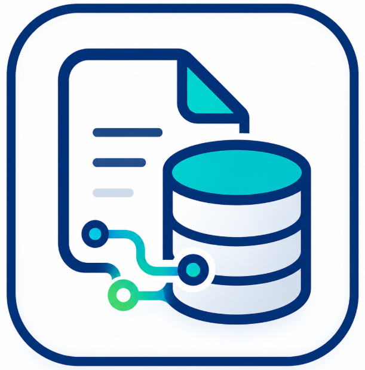
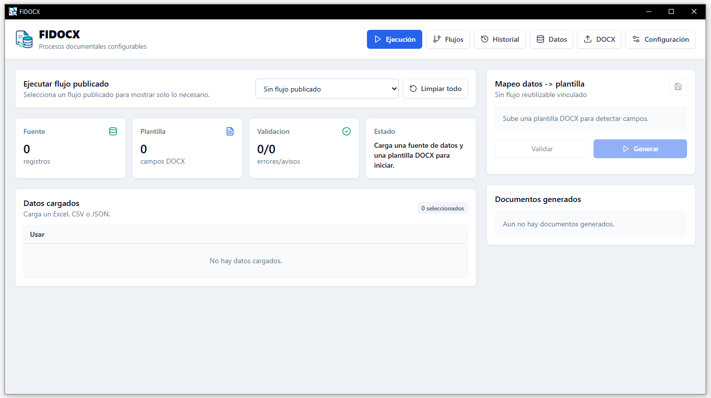

Excel to DOCX and PDF
Load data from Excel and generate personalized documents using Word templates with dynamic fields.

Document automation for WindowsFIDOCX automates repetitive document creation using data from Excel, CSV, JSON or forms. It maps fields to DOCX templates, validates information and generates Word or PDF files individually or in bulk.
FIDOCX is designed to reduce manual work, avoid errors and speed up repetitive document generation for administrative, academic, commercial or internal processes.
Load data from Excel and generate personalized documents using Word templates with dynamic fields.
Use placeholders, variable fields, conditions and tables inside your DOCX documents.
Save configurations to repeat document processes without mapping everything again.
Detect missing fields, incorrect data or incomplete settings before generating final files.
Create multiple documents in one execution from tabular records or structured data.
Convert DOCX documents to PDF when LibreOffice is available on the Windows computer.
FIDOCX transforms structured data into documents ready to deliver, sign, archive or send.
Import Excel, CSV, JSON or enter data from a form.
Choose a DOCX file with dynamic fields.
Connect data columns with Word template placeholders.
Review errors or incomplete data before generation.
Get DOCX and PDF documents individually or in bulk.

FIDOCX can adapt to processes where formats are repeated and only the data changes for each person, client, supplier, student, patient or record.
Bulk certificate generation from a list of participants, courses, dates, grades or responsible staff.
Work, academic, technical or administrative documents with personalized information.
Personalized documents for clients, suppliers, staff or internal agreements.
Reports with variable data, Word-defined formats and DOCX or PDF output.
Personalized letters from tabular data without manual copy and paste.
Repetitive document generation with previous validation and configurable fields.
FIDOCX can also support internal formats, administrative documents, personalized communications and processes that require document standardization.
Request a demonstration to review the complete workflow: data loading, DOCX template mapping, validation and file generation.
FIDOCX is initially oriented to Windows computers and local document workflows.
Compatible with Windows computers. The application is delivered as a desktop installer upon request.
LibreOffice is optional and only required to export documents to PDF. DOCX generation can work without LibreOffice.
Learn how FIDOCX can help automate Word and PDF documents from Excel, reduce manual tasks and standardize document formats.
Yes. FIDOCX is a desktop application. The main document workflow can run locally on the computer.
Only for PDF export. DOCX generation can work without LibreOffice.
The installer is currently delivered upon request to control testing, installation and initial support.
Certificates, letters, contracts, reports, forms, records and administrative documents.
Yes. You can load an Excel table, map its columns to a DOCX template and generate personalized documents for each record.